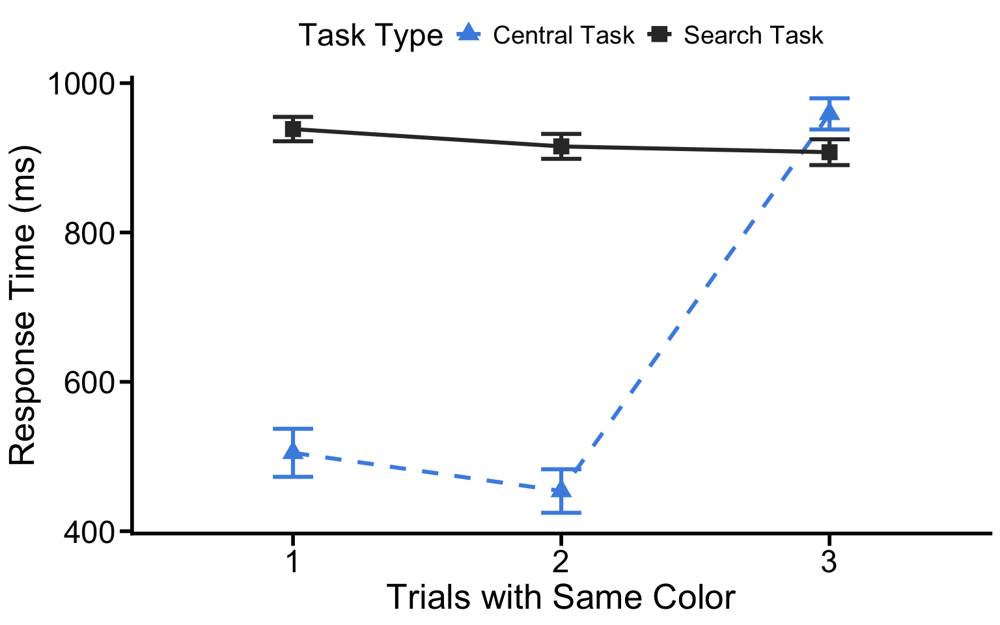

The projects should be numbered consecutively (i.e., in the order in which you began them), and should include for each project a description of the goal, the product (computer program, hand graph, computer graph, etc.), the data, and some interpretation. Reports must be reproducible and of high quality in terms of writing, grammar, presentation, etc.
This and following several portfolio will conduct a secondary analysis using data from an attention capture study (Zhang & Gaspelin, 2026; 10.17605/OSF.IO/D4FX8). The original Experiment 3 analysis (Manuscript: From Capture to Control: Initial Capture Increases Learned Suppression) examined how the oculomotor system learns to suppress a salient color singleton distractor across a 3-trial sequence in which the same distractor color repeated. The key measure was the oculomotor capture effect: the difference in the rate of first eye movements directed toward the salient singleton versus a nonsingleton distractor (Singleton% − Nonsingleton%). A positive value indicates initial capture (the eye was attracted to the singleton), while a negative value indicates learned suppression (the eye actively avoided the singleton).
The two task types were compared:
The key comparison was on Trial 3 - did prior experience with active search (which produced initial capture on Trial 1) generate stronger suppression and no experience with initial capture (the central task) generate zero or below zero suppression?
Despite recording several rich behavioral and oculomotor variables, the original script only analyzed the oculomotor capture effect (first fixation direction) and singleton dwell time. Three measures that are fully available in the dataset were never analyzed:
These three secondary analyses test whether the suppression-learning pattern found in the oculomotor capture effect generalizes to complementary behavioral and oculomotor measures. Together, they provide a more complete picture of what changes across the 3-trial same-color sequence:
| Analysis | What it measures | Key question |
|---|---|---|
| RT | Button-press speed | Does search get faster as the singleton is suppressed? |
| SRT | First saccade initiation speed | Does the eye move more decisively as distractor competition drops? |
| Target Fixation Rate | Where the first eye movement lands | Does suppression of the singleton redirect attention toward the target? |
The portfolio will look at the first secondary analysis, and the following two will examine the SRT and Target Fixation Rate, respectively.
rm(list = ls())
setwd("~/Documents/GitHub/DS4P_Portfolio")
library('NickPsych')
library('tidyverse')## ── Attaching core tidyverse packages ──────────────────────── tidyverse 2.0.0 ──
## ✔ dplyr 1.1.4 ✔ readr 2.1.5
## ✔ forcats 1.0.1 ✔ stringr 1.5.2
## ✔ ggplot2 4.0.0 ✔ tibble 3.3.0
## ✔ lubridate 1.9.4 ✔ tidyr 1.3.1
## ✔ purrr 1.1.0
## ── Conflicts ────────────────────────────────────────── tidyverse_conflicts() ──
## ✖ dplyr::filter() masks stats::filter()
## ✖ dplyr::lag() masks stats::lag()
## ℹ Use the conflicted package (<http://conflicted.r-lib.org/>) to force all conflicts to become errorslibrary('reshape2')##
## Attaching package: 'reshape2'
##
## The following object is masked from 'package:tidyr':
##
## smithslibrary('writexl')
library('dplyr')
library('bruceR')##
## bruceR (v2026.1)
## Broadly Useful Convenient and Efficient R functions
##
## Packages also loaded:
## ✔ dplyr ✔ data.table
## ✔ tidyr ✔ emmeans
## ✔ stringr ✔ lmerTest
## ✔ forcats ✔ effectsize
## ✔ ggplot2 ✔ performance
## ✔ cowplot ✔ interactions
##
## Main functions of `bruceR`:
## cc() Describe() TTEST()
## add() Freq() MANOVA()
## .mean() Corr() EMMEANS()
## set.wd() Alpha() PROCESS()
## import() EFA() model_summary()
## print_table() CFA() lavaan_summary()
##
## For full functionality, please install all dependencies:
## install.packages("bruceR", dep=TRUE)
##
## Online documentation:
## https://psychbruce.github.io/bruceR
##
## To use this package in publications, please cite:
## Bao, H. W. S. (2021). bruceR: Broadly useful convenient and efficient R functions (Version 2026.1) [Computer software]. https://doi.org/10.32614/CRAN.package.bruceR
##
##
## These packages are dependencies but not yet installed:
## - pacman, ggtext, see, vars, phia, MuMIn, BayesFactor, GGally
##
## ***** Install All Dependencies *****
## install.packages("bruceR", dep=TRUE)library('openxlsx')
library('knitr')
library('xtable')##
## Attaching package: 'xtable'
##
## The following object is masked from 'package:performance':
##
## display
##
## The following object is masked from 'package:effectsize':
##
## displayAll preprocessing is identical to
InitCap_Exp3_analysis.Rmd.
## VARIABLES
#Thresholds (RT, SRT, SD cut)
hiRT = 2000 # default = 2000
loRT = 200 # default = 200
loSRT = 50 # default = 50
hiSRT = 1000 # default = 1000
SDcut = 3.5
pracBlocks = 2
monDelay = 7 # timing delay of monitor (7 ms) for the eye tracker in Nick's lab
# Screen properties (to calculate fixation annulus later)
scrW = 1920
scrH = 1080
ctrX = scrW/2
ctrY = scrH/2
samprate = 500
setsize = 6
shapesz = 54
eccent = 270 # 4.5 degrees
fixZone = 90 # 1.5 degrees
outZone = 450 # 7.5 degress
angle = 360 / setsize
loc = data.frame(x = numeric(setsize),
y = numeric(setsize))
loc$x[1] = ctrX
loc$y[1] = ctrY - eccent
for(i in 2:setsize){
coord = xyrotate(loc$x[1], loc$y[1],ctrX,ctrY,(i-1)*(360/setsize))
loc$x[i] = coord$X
loc$y[i] = coord$Y
}
## READ DATA & PREPROCESS
# Read Data
raw = readFixReport("~/Desktop/2025-2026/Courses/Data science for psych/Experiment3/Analysis Script/42sub.txt")
raw$ACC <- as.numeric(raw$ACC)
raw$RT <- as.numeric(raw$RT)
raw$SRT <- as.numeric(raw$PREVIOUS_SAC_START_TIME)
raw$block <- as.numeric(raw$block)
raw$Dwell <- as.numeric(raw$CURRENT_FIX_DURATION)
raw$trial <- as.numeric(raw$trial)
raw$targLoc <- as.numeric(raw$targLoc)
raw$singLoc <- as.numeric(raw$singLoc)
raw$targAngle <- as.numeric(raw$targAngle)
raw$singAngle <- as.numeric(raw$singAngle)
raw$singTargAngle <- as.numeric(raw$singTargAngle)
numtrials = aggregate(trial ~ subjnum, data = raw, FUN = max) #record the number of trials per subject
raw_unique <- raw %>% distinct(subjnum, taskType, trial)
numtrials1 <- raw_unique %>%
group_by(subjnum, taskType) %>%
summarize(num_trials = n())## `summarise()` has grouped output by 'subjnum'. You can override using the
## `.groups` argument.# create a practice/experimental label
raw$phase = ifelse(raw$block <= pracBlocks, "practice", "formal")
# Get Currently Fixated Item
# X/Y coordinate of the fixation
raw$currloc = getCurrFixLoc(raw$CURRENT_FIX_X, raw$CURRENT_FIX_Y, loc)
# which item was fixated
raw$curritem = ifelse(is.na(raw$currloc), NA,
ifelse(raw$currloc == raw$targLoc, 'Target',
ifelse(raw$currloc == raw$singLoc, 'Singleton',
'Nonsingleton')))
# First Fixation Index
# Creates an annulus around the search items
# Eye movements must leave the center fixation region
# Creates "wedges" around each search item
raw$saccindex = adjustFixIndex(raw$subjnum, raw$trial, fixZone, outZone, raw$CURRENT_FIX_X, raw$CURRENT_FIX_Y, ctrX, ctrY)
raw$numfix = ave(raw$saccindex, interaction(raw$subjnum, raw$trial), FUN = max)
# Normalize XY Values
coord = xyrotate(raw$CURRENT_FIX_X, raw$CURRENT_FIX_Y, ctrX, ctrY, -raw$targAngle)
raw$normX = coord$X
raw$normY = coord$Y
raw$normcurrloc = getCurrFixLoc(raw$normX, raw$normY, loc)
## COLLAPSE -60 and 60, -120 and 120
raw$normX = ifelse(raw$singTargAngle == '-60', 1920 - raw$normX,
ifelse(raw$singTargAngle == '-120', 1920 - raw$normX, raw$normX))
raw$singTargAngle <- ifelse(raw$singTargAngle == '-60', '60',
ifelse(raw$singTargAngle == '-300', '60',
ifelse(raw$singTargAngle == '-120', '120',
ifelse(raw$singTargAngle == '-240', '120',
ifelse(raw$singTargAngle == '-180', '180', raw$singTargAngle)))))
# TIME DELAY CORRECTION
# Correct the RT and SRT for the monitor delay
raw$RT = raw$RT - monDelay
raw$SRT = raw$SRT - monDelay
## OUTLIER REPORT
# Outlier Flags
raw$keepRT = ifelse( raw$RT > loRT & raw$RT <= hiRT, 1, 0 ) # get rid of timeout trials
#raw$keepSRT = ifelse( raw$SRT > loSRT & raw$SRT < hiSRT, 1, 0 )
raw$goodTrials = ifelse(raw$keepRT == 1 & raw$ACC == 1, 1, 0 & raw$brokeFixation != 1)
# Outlier Report
trimdata = subset(raw, phase != 'practice' & goodTrials == 1)
trimdata$RT <- as.numeric(as.character(trimdata$RT))
trimdata$SRT <- as.numeric(as.character(trimdata$SRT))
# Calculate mean RT and SRT for each subject
trimdata <- trimdata[!is.na(trimdata$RT) & !is.na(trimdata$SRT), ]
outlier1 = aggregate(cbind(RT, SRT) ~ subjnum, data = trimdata, mean)
# Calculate mean ACC for each subject
trimdata = subset(raw, phase != 'practice' & keepRT == 1)
outlier2 <- aggregate(ACC~subjnum, data = trimdata, FUN = mean)
# Calculate the number of trials removed because of eye-movement on central trials for each subject
trimdata = subset(raw, phase != 'practice' & goodTrials == 1)
outlier3 <- aggregate(brokeFixation ~ subjnum, data = trimdata, FUN = function(x) mean(x == 1, na.rm = TRUE))
colnames(outlier3)[2] <- "brokeFixationRate"
# Calculate the number of trials removed for each subject
trimdata = subset(raw, phase != 'practice');
outlier4 <- aggregate(cbind( keepRT, goodTrials) ~ subjnum, data = trimdata, mean)
outlier4$trialsRemoved <- 1 - outlier4$goodTrials
# Merge the outlier reports
outlier <- merge(outlier1, outlier2, by = "subjnum")
outlier <- merge(outlier, outlier3, by = "subjnum", all.x = TRUE)
outlier <- merge(outlier, outlier4, by = "subjnum")
# Calcaulte the cutoffs for each subject
outlier$ACCcut = mean(outlier$ACC) - ( SDcut * sd(outlier$ACC) ) # ACC cutoff (SD cut)
outlier$RTcut = mean(outlier$RT) + ( SDcut * sd(outlier$RT) ) # RT cutoff (SD cut)
outlier$badsubjBrokeFix = mean(outlier$brokeFixationRate) + (SDcut * sd(outlier$brokeFixationRate)) # Broke fixation cutoff (SD cut)
outlier$badsubj = with(outlier, ifelse( RT > RTcut| ACC < ACCcut| brokeFixationRate > badsubjBrokeFix, 1, 0) )
# flag any participants that exceed any of the SD cut procedures
# Notes to flag each participant who exceeded each cut (ACC, RT, etc.)
outlier$note = with( outlier, ifelse(RT > RTcut, "High RT", ".") )
outlier$note = with( outlier, ifelse(ACC < ACCcut, "Low ACC", note))
outlier$note = with( outlier, ifelse(brokeFixationRate > badsubjBrokeFix, "High BrokeFixation", note))
## DROP BAD SUBJECTS
badsubjects = outlier$subjnum[outlier$note != '.']
trimdata = subset(raw, !(subjnum %in% badsubjects)) # keep the good participants' data
## MAKE FIXATION DATA
#delete practice data
fdata = subset(trimdata, brokeFixation != 1 & phase != "practice" & keepRT == 1) # call it "first fixation data" or fdata for short
fdata = subset(fdata,
(searchArray == "search" & saccindex == 1 |
searchArray == "letter" & saccindex == 0)
) # call it "first fixation data" or fdata for short
fdata = subset(fdata,
!(searchArray == "letter" & !is.na(SRT)))
accdata = subset(fdata, ACC == 1) # only look at correct response trials by analysis RT
# create newtrial from trials 1-3
accdata$newtrial <- ((accdata$trial - 121) %% 3) + 1
# mark broke trials (mark trialcut = 0 in 1-3 trials as long as there exists eye movement)
accdata$trialcut <- 1
accdata <- accdata %>%
group_by(subjnum) %>%
mutate(
trial_group = (trial - 121) %/% 3 # Group trials into blocks of 3
) %>%
group_by(subjnum, trial_group) %>% # Group by both subject and trial group
mutate(
trialcut = ifelse(taskType == "search", 1,
ifelse(taskType == "central" & sum(trialcut) == 3, 1, 0)) # Check group completeness and assign trialcut
) %>%
ungroup()
# record the percentage of trialcut = 0 in 1-3 trials
outlier5 <- accdata %>%
group_by(subjnum) %>%
summarise(
trialcut_zero_rate = mean(trialcut == 0, na.rm = TRUE)) #calculate the percentage of trialcut = 0
outlier <- merge(outlier, outlier5, by = "subjnum")
# only keep trialcut = 1
accdata <- subset(accdata, trialcut == 1)
# Record the number of trials per subject for each taskType
numtrials_total <- accdata %>%
group_by(subjnum) %>%
summarise(total_trials = n(), .groups = "drop")
numtrials_task <- accdata %>%
group_by(subjnum, taskType) %>%
summarise(num_trials = n(), .groups = "drop")
final_trials <- numtrials_task %>%
left_join(numtrials_total, by = "subjnum") %>%
mutate(
percent_total = total_trials / 480,
low_percentage = ifelse(percent_total < 0.75, 1, 0)
)
badsubjects = final_trials$subjnum[final_trials$low_percentage == 1]
accdata = subset(accdata, !(subjnum %in% badsubjects)) # keep the good participants' data# -------------------------------------------------------------------------
# Demographic Information
# For detailed demographic characteristics of participants
# (e.g., age, gender, recruitment),
# please see the manuscript: Experiment 3, Method section.
# -------------------------------------------------------------------------
raw <- raw %>%
mutate(gender = case_when(
tolower(gender) == "m" ~ "M",
tolower(gender) == "f" ~ "F",
TRUE ~ as.character(gender)
))
raw$subjnum <- factor(raw$subjnum)
nSubject = levels(raw$subjnum)
raw$age <- as.numeric(as.character(raw$age))
nSub2 <- raw %>%
group_by(subjnum) %>%
summarise(RT = mean(RT))
nSubject2 <- nrow(nSub2)
rm(nSub2)
# Assuming gender == "M" represents females
male_num <- raw %>%
filter(gender == "M") %>%
group_by(subjnum) %>%
summarise(RT = mean(RT, na.rm = TRUE), .groups = "drop") %>%
nrow()
# Assuming gender == "F" represents females
female_num <- raw %>%
filter(gender == "F") %>%
group_by(subjnum) %>%
summarise(RT = mean(RT, na.rm = TRUE), .groups = "drop") %>%
nrow()
people <- data.frame(all_sub_number=length(nSubject),
effect_sub_number=nSubject2,
male_num=male_num,
female_num=female_num,
age_max=max(raw$age),
age_min=min(raw$age),
age_mean = mean(raw$age, na.rm = TRUE),
age_sd = sd(raw$age)
)
print(people)## all_sub_number effect_sub_number male_num female_num age_max age_min age_mean
## 1 42 42 21 21 31 18 21.75074
## age_sd
## 1 3.949685# -------------------------------------------------------------------------
# Data Exclusion
# An exclusion criterion was established a prior.
# For details, please see the manuscript: Experiment 3, Data Analysis section.
# -------------------------------------------------------------------------
# Compute the total number of valid trials (excluding practice trials)
total_trials = subset(raw, phase != "practice")
total_trials1 <- nrow(total_trials) # Total number of trials
# Remove trials with invalid RT
excluded_RT = nrow(subset(total_trials, keepRT == 0))
perc_excluded_RT = (excluded_RT / total_trials1) * 100
# Remove trials with incorrect responses
excluded_ACC = nrow(subset(total_trials, ACC == 0))
perc_excluded_ACC = (excluded_ACC / total_trials1) * 100
# Compute the total exclusion percentage (including all exclusion criteria)
excluded_total = nrow(subset(total_trials, keepRT == 0 | ACC == 0))
perc_excluded_total = (excluded_total / total_trials1) * 100
# Create a data frame to store the results
exclusion_report <- data.frame(
Criteria = c("RT < 200 ms or RT > 2000 ms",
"Incorrect Response (ACC = 0)",
"Total Excluded Trials"),
Excluded_Trials = c(excluded_RT, excluded_ACC, excluded_total),
Percentage = c(round(perc_excluded_RT, 2),
round(perc_excluded_ACC, 2),
round(perc_excluded_total, 2))
)
# Print output
print(exclusion_report)## Criteria Excluded_Trials Percentage
## 1 RT < 200 ms or RT > 2000 ms 1828 2.89
## 2 Incorrect Response (ACC = 0) 1542 2.44
## 3 Total Excluded Trials 3203 5.07#Extract accdata as preprocessed data to a csv file
library(writexl)
write.csv(accdata, "/Users/mumizz./Desktop/2025-2026/Courses/Data science for psych/Experiment3/Analysis Script/accdata.csv", row.names = FALSE)#Extract Trim data to a csv file for later usage
library(writexl)
write.csv(trimdata, "/Users/mumizz./Desktop/2025-2026/Courses/Data science for psych/Experiment3/Analysis Script/trimdata.csv", row.names = FALSE)RT is the time between display onset and the participant’s button-press response. In the search task, a shorter RT means the participant found the target more efficiently. If learning to suppress the singleton reduces attentional interference, RT should decrease monotonically across Trials 1 → 2 → 3, mirroring the drop in oculomotor capture.
In the central task, the situation is different: participants are not searching, so RT reflects letter-detection speed rather than visual search efficiency. Any RT change in the central task across trials would reflect processes unrelated to singleton suppression (e.g., practice effects, temporal expectation). Including both tasks in a 2 × 3 ANOVA therefore lets us test whether RT changes are specific to the search task (a significant interaction) or general across both tasks (a main effect of trial with no interaction).
Predicted pattern:
newtrial × taskType
interaction would confirm that RT change is suppression-driven rather
than a generic practice effect.RT is a trial-level variable — it has one value per trial, but
accdata has one row per fixation. We first deduplicate to
one row per trial, then average across trial groups (i.e., across all
sets of 3 trials) within each subject × condition × position cell.
rt_data <- accdata %>%
distinct(subjnum, taskType, trial, newtrial, RT) %>%
group_by(subjnum, taskType, newtrial) %>%
summarise(RT = mean(RT, na.rm = TRUE), .groups = "drop")
rt_data %>%
group_by(taskType, newtrial) %>%
summarise(M = round(mean(RT), 2),
SD = round(sd(RT), 2),
n = n(), .groups = "drop") %>%
kable(caption = "Table 1. Mean RT (ms) by condition and trial position.")| taskType | newtrial | M | SD | n |
|---|---|---|---|---|
| central | 1 | 504.97 | 90.78 | 40 |
| central | 2 | 453.80 | 57.66 | 40 |
| central | 3 | 958.84 | 154.69 | 40 |
| search | 1 | 938.46 | 139.97 | 40 |
| search | 2 | 915.30 | 144.88 | 40 |
| search | 3 | 907.51 | 144.32 | 40 |
Patterns in both tasks are clear. In the search task, RT decreases flatly across trial positions, from 938ms on trial 1 to 908 on trial 3, consistent with the prediction that oculomotor suppression of the singleton reduces attentional competition and thereby speeds search efficiency. Differently, in the central task, RT is substantially lower on Trial 1 and 2, reflecting simple letter-detection responses rather than visual search. However, on trial 3, the RT dramatically spike to 959ms over any trials in search task. This is structually meaningful: trial 3 of the central task is critical on which eye movements are relased and participants must search for the display for the first time, requiring a qualitatively different cognitive process than the monitoring performed on trial 1 and 2.
We first conducted a 2(taskType) × 3(newtrial) within-subjects ANOVA.
Specifically, we predicted that the newtrial main effect
tests whether RT changes across trial positions overall. The
taskType main effect tests whether one task is generally
faster. The newtrial × taskType interaction is the critical
test: does RT change differently across trials depending on whether the
task involved active search (and therefore singleton interference)?
MANOVA(data = rt_data,
subID = "subjnum",
dv = "RT",
within = c('newtrial', 'taskType'),
digits = 2) %>%
EMMEANS('newtrial') %>%
EMMEANS('taskType') %>%
EMMEANS('taskType', by = 'newtrial')##
## * Data are aggregated to mean (across items/trials)
## if there are >=2 observations per subject and cell.
## You may use Linear Mixed Model to analyze the data,
## e.g., with subjects and items as level-2 clusters.##
## ====== ANOVA (Within-Subjects Design) ======
##
## Descriptives:
## ─────────────────────────────────────────
## "newtrial" "taskType" Mean S.D. n
## ─────────────────────────────────────────
## newtrial1 central 504.97 ( 90.78) 40
## newtrial1 search 938.46 (139.97) 40
## newtrial2 central 453.80 ( 57.66) 40
## newtrial2 search 915.30 (144.88) 40
## newtrial3 central 958.84 (154.69) 40
## newtrial3 search 907.51 (144.32) 40
## ─────────────────────────────────────────
## Total sample size: N = 40
##
## ANOVA Table:
## Dependent variable(s): RT
## Between-subjects factor(s): –
## Within-subjects factor(s): newtrial, taskType
## Covariate(s): –
## ─────────────────────────────────────────────────────────────────────────────────────────
## MS MSE df1 df2 F p η²p [90% CI of η²p] η²G
## ─────────────────────────────────────────────────────────────────────────────────────────
## newtrial 1438783.28 3513.16 2 78 409.54 <.001 *** .91 [.88, .93] .43
## taskType 4745013.47 10863.84 1 39 436.77 <.001 *** .92 [.88, .94] .56
## newtrial * taskType 1662766.39 3933.86 2 78 422.68 <.001 *** .92 [.89, .93] .47
## ─────────────────────────────────────────────────────────────────────────────────────────
## MSE = mean square error (the residual variance of the linear model)
## η²p = partial eta-squared = SS / (SS + SSE) = F * df1 / (F * df1 + df2)
## ω²p = partial omega-squared = (F - 1) * df1 / (F * df1 + df2 + 1)
## η²G = generalized eta-squared (see Olejnik & Algina, 2003)
## Cohen’s f² = η²p / (1 - η²p)
##
## Levene’s Test for Homogeneity of Variance:
## No between-subjects factors. No need to do the Levene’s test.
##
## Mauchly’s Test of Sphericity:
## ──────────────────────────────────────────
## Mauchly's W p
## ──────────────────────────────────────────
## newtrial 0.3853 <.001 ***
## newtrial * taskType 0.5932 <.001 ***
## ──────────────────────────────────────────
## The sphericity assumption is violated.
## You may specify: sph.correction="GG" (or ="HF")
##
## ------ EMMEANS (effect = "newtrial") ------
##
## Joint Tests of "newtrial":
## ──────────────────────────────────────────────────────────────────
## Effect df1 df2 F p η²p [90% CI of η²p]
## ──────────────────────────────────────────────────────────────────
## taskType 1 39 436.771 <.001 *** .918 [.876, .941]
## newtrial 2 39 290.682 <.001 *** .937 [.905, .955]
## taskType * newtrial 2 39 271.876 <.001 *** .933 [.899, .952]
## ──────────────────────────────────────────────────────────────────
## Note. Simple effects of repeated measures with 3 or more levels
## are different from the results obtained with SPSS MANOVA syntax.
##
## Estimated Marginal Means of "newtrial":
## ───────────────────────────────────────────────
## "newtrial" Mean [95% CI of Mean] S.E.
## ───────────────────────────────────────────────
## newtrial1 721.714 [690.678, 752.750] (15.344)
## newtrial2 684.549 [655.604, 713.494] (14.310)
## newtrial3 933.172 [886.300, 980.043] (23.173)
## ───────────────────────────────────────────────
##
## Pairwise Comparisons of "newtrial":
## ────────────────────────────────────────────────────────────────────────────────────
## Contrast Estimate S.E. df t p Cohen’s d [95% CI of d]
## ────────────────────────────────────────────────────────────────────────────────────
## newtrial2 - newtrial1 -37.165 ( 4.401) 39 -8.445 <.001 *** -0.366 [-0.475, -0.258]
## newtrial3 - newtrial1 211.457 (11.334) 39 18.658 <.001 *** 2.083 [ 1.804, 2.363]
## newtrial3 - newtrial2 248.623 (10.755) 39 23.117 <.001 *** 2.449 [ 2.184, 2.714]
## ────────────────────────────────────────────────────────────────────────────────────
## Pooled SD for computing Cohen’s d: 101.504
## Results are averaged over the levels of: taskType
## P-value adjustment: Bonferroni method for 3 tests.
##
## Disclaimer:
## By default, pooled SD is Root Mean Square Error (RMSE).
## There is much disagreement on how to compute Cohen’s d.
## You are completely responsible for setting `sd.pooled`.
## You might also use `effectsize::t_to_d()` to compute d.
##
## ------ EMMEANS (effect = "taskType") ------
##
## Joint Tests of "taskType":
## ──────────────────────────────────────────────────────────────────
## Effect df1 df2 F p η²p [90% CI of η²p]
## ──────────────────────────────────────────────────────────────────
## taskType 1 39 436.771 <.001 *** .918 [.876, .941]
## newtrial 2 39 290.682 <.001 *** .937 [.905, .955]
## taskType * newtrial 2 39 271.876 <.001 *** .933 [.899, .952]
## ──────────────────────────────────────────────────────────────────
## Note. Simple effects of repeated measures with 3 or more levels
## are different from the results obtained with SPSS MANOVA syntax.
##
## Estimated Marginal Means of "taskType":
## ───────────────────────────────────────────────
## "taskType" Mean [95% CI of Mean] S.E.
## ───────────────────────────────────────────────
## central 639.202 [611.795, 666.610] (13.550)
## search 920.420 [875.199, 965.642] (22.357)
## ───────────────────────────────────────────────
##
## Pairwise Comparisons of "taskType":
## ───────────────────────────────────────────────────────────────────────────────
## Contrast Estimate S.E. df t p Cohen’s d [95% CI of d]
## ───────────────────────────────────────────────────────────────────────────────
## search - central 281.218 (13.456) 39 20.899 <.001 *** 2.770 [2.502, 3.039]
## ───────────────────────────────────────────────────────────────────────────────
## Pooled SD for computing Cohen’s d: 101.504
## Results are averaged over the levels of: newtrial
## No need to adjust p values.
##
## Disclaimer:
## By default, pooled SD is Root Mean Square Error (RMSE).
## There is much disagreement on how to compute Cohen’s d.
## You are completely responsible for setting `sd.pooled`.
## You might also use `effectsize::t_to_d()` to compute d.
##
## ------ EMMEANS (effect = "taskType") ------
##
## Joint Tests of "taskType":
## ──────────────────────────────────────────────────────────────────
## Effect "newtrial" df1 df2 F p η²p [90% CI of η²p]
## ──────────────────────────────────────────────────────────────────
## taskType newtrial1 1 39 417.663 <.001 *** .915 [.871, .939]
## taskType newtrial2 1 39 537.029 <.001 *** .932 [.898, .952]
## taskType newtrial3 1 39 29.254 <.001 *** .429 [.234, .578]
## ──────────────────────────────────────────────────────────────────
## Note. Simple effects of repeated measures with 3 or more levels
## are different from the results obtained with SPSS MANOVA syntax.
##
## Estimated Marginal Means of "taskType":
## ───────────────────────────────────────────────────────────
## "taskType" "newtrial" Mean [95% CI of Mean] S.E.
## ───────────────────────────────────────────────────────────
## central newtrial1 504.968 [475.936, 534.000] (14.353)
## search newtrial1 938.460 [893.694, 983.226] (22.132)
## central newtrial2 453.802 [435.360, 472.243] ( 9.117)
## search newtrial2 915.296 [868.963, 961.629] (22.907)
## central newtrial3 958.838 [909.365, 1008.311] (24.459)
## search newtrial3 907.505 [861.348, 953.663] (22.820)
## ───────────────────────────────────────────────────────────
##
## Pairwise Comparisons of "taskType":
## ──────────────────────────────────────────────────────────────────────────────────────────
## Contrast "newtrial" Estimate S.E. df t p Cohen’s d [95% CI of d]
## ──────────────────────────────────────────────────────────────────────────────────────────
## search - central newtrial1 433.492 (21.211) 39 20.437 <.001 *** 4.271 [ 3.848, 4.693]
## search - central newtrial2 461.494 (19.914) 39 23.174 <.001 *** 4.547 [ 4.150, 4.943]
## search - central newtrial3 -51.332 ( 9.491) 39 -5.409 <.001 *** -0.506 [-0.695, -0.317]
## ──────────────────────────────────────────────────────────────────────────────────────────
## Pooled SD for computing Cohen’s d: 101.504
## No need to adjust p values.
##
## Disclaimer:
## By default, pooled SD is Root Mean Square Error (RMSE).
## There is much disagreement on how to compute Cohen’s d.
## You are completely responsible for setting `sd.pooled`.
## You might also use `effectsize::t_to_d()` to compute d.All three effects we expected were highly significant. First, the trial position showed a significant main effect on RT, F(2,78) = 409.54, p < .001, η²p = .91, suggesting that RT differed substantially across trial positions, averaged over both tasks. However, this main effect is hard to interpret in isolation given the dramatic and directionally opposite RT change, espeically in the trial 3 of the central task. Besides, a significant main effect of task type was showed, F(1, 39) = 436.77, p < .001, η²p = .92. Averaged across all three trials, search task RT (M = 920ms) was 281ms longer than central task RT (639ms), d = 2.77. This refelcts the fundamental difference in task demands rather than suppression specifically. Critically, RT changed across trials in sharply different ways depending on the task, with decrease in the search task and spiking in the central task on trial 3, F(2, 78) = 422.68, p < .001, η²p = .92.
Simple effects of task type at each trial position decompose the interaction. Specifically, in trial 1 and 2, RT of search task was much longer than central task, (trial1: F(1,39) = 417.66, p < .001, η²p = .915; trial 2: F(1, 39) = 537.03, p < .001, η²p = .932). Both tasks were far apart. The trend in trial 3 was reversed. Participants spent slightly more than on the central task than the search task, F(1, 39) = 29.25, p < .001, η²p = .429, d = −0.51, suggesting a clear the critical trial (trial 3) cost in central task. On the trial 3 of central task, participant searched the display with their eyes movement, in which they did so without ever having experience the singleton as a distractor before, meaning no suppression had been learned. By contrast, when participants doing search task, they had spent two prior trials learning to suppress that same singleton.
Building upon the significant interaction above, this follow-up isolates the RT effect within the search task alone, without the central task serving as a reference. To isolate the suppression-specific RT effect, we ran an one-way within-subject ANOVA restricted to the search task, with trial position as the only predictor. This mirrors how the original manuscript reported the oculomotor capture ANOVA (search-only, Panel B).
rt_search <- rt_data %>% filter(taskType == "search")
MANOVA(
data = rt_search,
subID = "subjnum",
dv = "RT",
within = 'newtrial',
digits = 2
) %>%
EMMEANS('newtrial')##
## * Data are aggregated to mean (across items/trials)
## if there are >=2 observations per subject and cell.
## You may use Linear Mixed Model to analyze the data,
## e.g., with subjects and items as level-2 clusters.##
## ====== ANOVA (Within-Subjects Design) ======
##
## Descriptives:
## ──────────────────────────────
## "newtrial" Mean S.D. n
## ──────────────────────────────
## newtrial1 938.46 (139.97) 40
## newtrial2 915.30 (144.88) 40
## newtrial3 907.51 (144.32) 40
## ──────────────────────────────
## Total sample size: N = 40
##
## ANOVA Table:
## Dependent variable(s): RT
## Between-subjects factor(s): –
## Within-subjects factor(s): newtrial
## Covariate(s): –
## ─────────────────────────────────────────────────────────────────────────
## MS MSE df1 df2 F p η²p [90% CI of η²p] η²G
## ─────────────────────────────────────────────────────────────────────────
## newtrial 10369.77 715.65 2 78 14.49 <.001 *** .27 [.13, .39] .01
## ─────────────────────────────────────────────────────────────────────────
## MSE = mean square error (the residual variance of the linear model)
## η²p = partial eta-squared = SS / (SS + SSE) = F * df1 / (F * df1 + df2)
## ω²p = partial omega-squared = (F - 1) * df1 / (F * df1 + df2 + 1)
## η²G = generalized eta-squared (see Olejnik & Algina, 2003)
## Cohen’s f² = η²p / (1 - η²p)
##
## Levene’s Test for Homogeneity of Variance:
## No between-subjects factors. No need to do the Levene’s test.
##
## Mauchly’s Test of Sphericity:
## ───────────────────────────────
## Mauchly's W p
## ───────────────────────────────
## newtrial 0.9959 .925
## ───────────────────────────────
##
## ------ EMMEANS (effect = "newtrial") ------
##
## Joint Tests of "newtrial":
## ──────────────────────────────────────────────────────
## Effect df1 df2 F p η²p [90% CI of η²p]
## ──────────────────────────────────────────────────────
## newtrial 2 39 13.694 <.001 *** .413 [.204, .559]
## ──────────────────────────────────────────────────────
## Note. Simple effects of repeated measures with 3 or more levels
## are different from the results obtained with SPSS MANOVA syntax.
##
## Estimated Marginal Means of "newtrial":
## ───────────────────────────────────────────────
## "newtrial" Mean [95% CI of Mean] S.E.
## ───────────────────────────────────────────────
## newtrial1 938.460 [893.694, 983.226] (22.132)
## newtrial2 915.296 [868.963, 961.629] (22.907)
## newtrial3 907.505 [861.348, 953.663] (22.820)
## ───────────────────────────────────────────────
##
## Pairwise Comparisons of "newtrial":
## ───────────────────────────────────────────────────────────────────────────────────
## Contrast Estimate S.E. df t p Cohen’s d [95% CI of d]
## ───────────────────────────────────────────────────────────────────────────────────
## newtrial2 - newtrial1 -23.164 (5.912) 39 -3.918 .001 ** -0.612 [-1.003, -0.221]
## newtrial3 - newtrial1 -30.955 (6.168) 39 -5.018 <.001 *** -0.818 [-1.226, -0.410]
## newtrial3 - newtrial2 -7.791 (5.861) 39 -1.329 .574 -0.206 [-0.593, 0.182]
## ───────────────────────────────────────────────────────────────────────────────────
## Pooled SD for computing Cohen’s d: 37.833
## P-value adjustment: Bonferroni method for 3 tests.
##
## Disclaimer:
## By default, pooled SD is Root Mean Square Error (RMSE).
## There is much disagreement on how to compute Cohen’s d.
## You are completely responsible for setting `sd.pooled`.
## You might also use `effectsize::t_to_d()` to compute d.The ANOVA was significant: F(2, 78) = 14.49, p < .001, η²p = .271, indicating that search RT changed reliably across the 3-trial same-color sequence. Pairwise comparisons (Bonferroni-corrected) revealed a statistically significant decrease (23.20ms) in RT of trial 2 compared to trial 1, t(39) = −3.92, p = .001, d = −.61, suggesting that suppression emerged quickly by the second encounter with the same singleton color. Similarly, comparing trial 1 and 3, RT decreased by 31.00ms, t(39) = −5.02, p < .001, d = −.82, demonstrating that the suppression benefit could be accumulated to speedup following trial 3. However, the additional RT decrease from trial 2 to trial 3 was only 7.8 ms and was not significant (t(39) = −1.33, p = .574, d = −0.21). This non-significant difference suggested that the bulk of the RT benefit was already achieved by trial 2, with no further meaningful gain on Trial 3. This pattern aligns with the oculomotor capture data from the original analysis, where the sharpest change in capture direction also occurred between trial 1 and trial 2.
rt_plot <- with(rt_data,
cmErrBar(RT, subjnum, paste(taskType, newtrial), "ci")) %>%
separate(group, into = c("condition", "trial"), sep = " ")
rt_plot$trial <- factor(rt_plot$trial, levels = c("1", "2", "3"))
ggplot(rt_plot, aes(x = trial, y = mean, group = condition, color = condition)) +
geom_errorbar(aes(ymin = minus, ymax = plus), width = 0.15, linewidth = 1.1) +
geom_line(linewidth = 1.1, aes(linetype = condition)) +
geom_point(size = 4, aes(shape = condition)) +
scale_color_manual(values = c("central" = "#4A90E2", "search" = "#333333"),
labels = c("Central Task", "Search Task")) +
scale_shape_manual(values = c("central" = 17, "search" = 15),
labels = c("Central Task", "Search Task")) +
scale_linetype_manual(values = c("central" = "dashed", "search" = "solid"),
labels = c("Central Task", "Search Task")) +
labs(x = "Trials with Same Color",
y = "Response Time (ms)",
color = "Task Type", shape = "Task Type", linetype = "Task Type") +
manuscript_theme
Figure S1. Mean RT (ms) across trial positions by task type. Error bars = 95% CI (Cousineau-Morey corrected for within-subjects designs). Solid black = Search Task; Dashed blue = Central Task.
The plot showed the diverging RT patterns across the two tasks. The search task decreased gradually across the three trials, while the central task descends between trials 1 and 2 then sharply raises to cross above the search task at trial 3. The two lines converge and cross between trials 2 and 3, visually showing the significant interaction between trial position and task type. Additionally, the downward trend in the search task across all three trial bins, paired with slightly gentle plain between trials and 3, reinforces that suppression drives a fast initial RT gain from trial 1 to 2, and then levels off to trial 3.